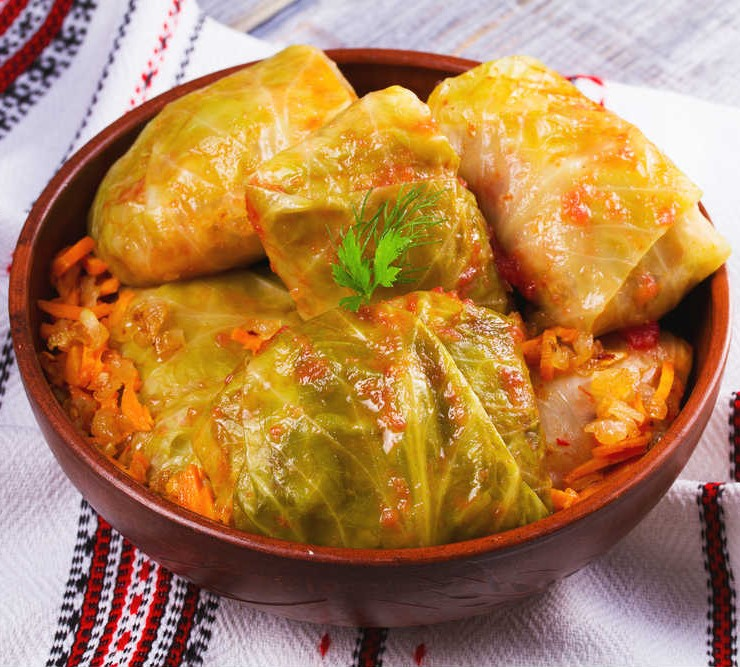

Traditional Albanian food everyone loves
Kosovo has an extremely unique cuisine. The prices of the foods in Kosovo are very affordable for tourists.
You can afford a high quality meal for under 10 euros.
In this list we've carefully chosen some of the most unique and most liked and popular Albanian dishes that you
shouldn't miss if you ever visit Kosovo.
Disclaimer: The list is in random order.
Enjoy!
Flija

One of the most unique Albanian dishes, most popular in Kosovo and northern parts of Albania. Flija is an easy crepe-like dish that has a crispy texture at the top and softer texture at the bottom. It is made using a “saç” which is a large metallic lid that is heated on fire and placed on top of the pan where the flija dough, and thus it bakes it. Flija is usually served with fresh dairy such as cheese or yogurt and salad on the side.
Byrek

Byrek is a delicious food made with dough layers filled with various tasty ingredients in between. Each Byrek can have its own unique fillings in between layers, thus, resulting in various Byrek recipes and flavors. The most popular “Byrek” recipes are “Byrek me Gjizë” (Byrek with Ricotta Cheese), “Byrek me Domate dhe Qepë” (Byrek with Onions and Tomatoes), “Byrek me Spinaq” (Byrek with Spinach), “Byrek me Mish” (Byrek with Meat).
Tarator
This appetizer is a great dish that Albanians usually eat before a meat-based entrée. It is usually served during the summer due to it being chilled before serving. The dish is made with yogurt, cold water, shredded cucumber, and salt. It has the consistency of a soup, so it is normal for this dish to be served in a bowl, and tastes very similar to the traditional Albanian drink dhallë, a traditional drink similar to yogurt but with a thin consistency and added salt.
Stuffed Peppers
The dish consists of green bell peppers that are stuffed with rice and meat. The exact recipe changes depending on the way it was passed on. The stuffed peppers then are baked and served hot. This dish is served with Greek yogurt, feta cheese, or dhalle. Adding chili peppers or black pepper to this dish is also common amongst Albanians as the spicy kick complements the dish's mild taste.
Ajvar
Ajvar is a condiment made from pickled red sweet peppers and eggplant, usually in the Autumn.Traditional Kosovar recipes use a pepper known as Red Bull's Horn Pepper.Red Bull's Horn is a sweet pepper that got its name from its shape. This dish is served as a side dish for many other dishes such as byrek, llokuma (friend dough), flija etc.
Qofte
Albanian Mint Meatballs with ground beef (or qofte) are a version of kofta. Koftas are known throughout Mediterranean, the Balkans, Middle East etc. They are usually made with ground beef, however there are versions with lamb, chicken, vegetables etc. The most common method of cooking the meatballs is to fry them.They are typically served with a big salad, a yogurt based dip, bread etc.
Sarma
Sarma are a mixture of minced meat, veggies and rice rolled in cabbage leaves or vine leaves.Stuffed cabbage is a delicacy made by stuffing cabbage leaves with a filling of meat, rice, and seasonings. Surrounded by pieces of smoked meat, the rolls are layered and simmered until aromas and flavors embrace. They are usually served with dairy products such as yogurt or cheese, bread and salads.
Trileqe
Trilece or also known as milk cake is originally from Latin America, but this version is the Turkish's take on it and it's very popular in Kosovo and Albania. It is made out of three different kinds of milk that include evaporated milk, heavy cream, and condensed milk. In Turkey, Kosovo and Albania, unlike in Central and South America, the cake is then topped with caramel that gives it a strong sweet taste.